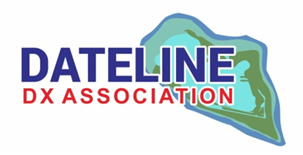

The Dateline DX Association is pleased to announce it has received permission from the USFWS for a DXpedition to Jarvis Island
National Wildlife Reserve this August. Jarvis is ranked nr. 18 on Clublog's global most wanted list. It is number 9 in Europe. Jarvis
Island is 450 miles from Palmyra Atoll and 1500 miles from Hawaii.
Jarvis was last on the air in 1990 and permission to visit has been difficult to obtain. We have worked very hard for the past few
years on this permission and after demonstrating the success of the RIB concept with remote operators from various locations in
2023 we have received a permit that allows 4 operators on the boat to visit Jarvis with 6 stations on land.
The small team of four, consisting of George, AA7JV, Don, N1DG, Tomi, HA7RY and Mike, KN4EEI, will install 6 RIB stations
on Jarvis, operating on 160 to 6 meters, using CW, SSB and FT8 modes. The on-island team will be augmented by 25 remote
operators from Asia, Europe and North America, running CW and FT8. FT8 operations will use the Fox/Hound mode.
The RIB equipment, which makes an efficient small footprint operation possible, was developed with the support of the NCDXF.
We will be accompanied to Jarvis by a team of 3 USFWS biologists conducting science.
Call sign, website and additional information will be announced shortly.
We wish to thank the staff of the USFWS in Hawaii for their hard work in approving this minimally invasive operation
on Jarvis Island NWR.
73,
George AA7JV and Don N1DG, permit holders for the Jarvis Island NWR 2024 DXpedition.